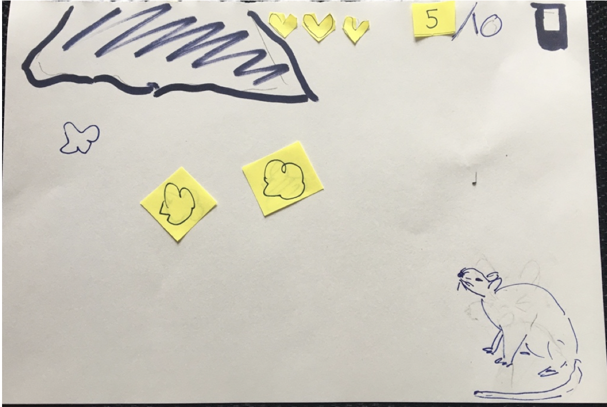
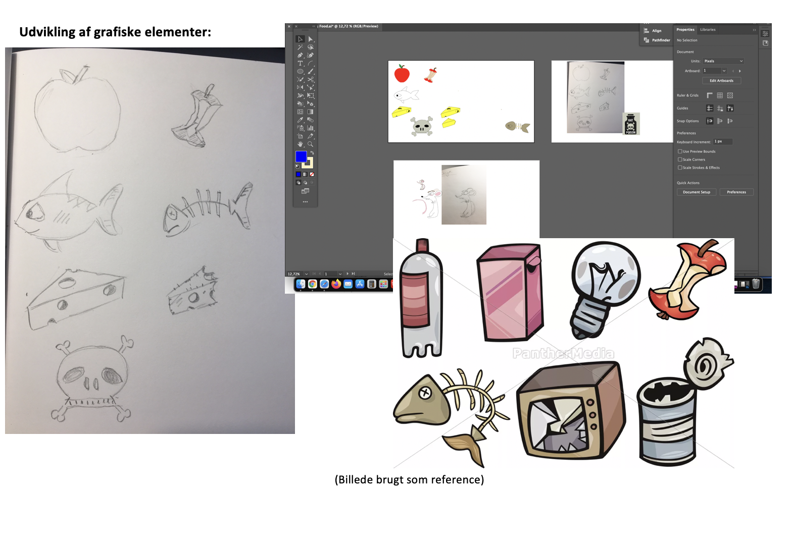

Animation
Temaet animation tog i en hvis grad elementer fra de tidligere forløb og byggede selv videre på nogle andre. Temaet introducerede også helt nye. Grundlaget for temaet var at den enkelte studerende skulle designe sit eget lavpraktiske spil. Alle grafiske elementer blev designet for bunden, og til spillets bassale funktioner blev programmet Javascript introduceret. Temaet endte ud i et selvprodceret interaktivt spil.
Opgavens hovedpunkter
- Udvikle grafik, genre, fotostil m.m
- Udtænke koncpet/ide
- Lave Aktivitetsdiagram
- Lave stat-machine diagram
- Aflvering af hjemmeside om spilelt
- Løbende opdatere spillet med nye funktioner
Proces
Mit spil byggede på et koncpet hvor mad og gift falder ned til en mus. Spilleren spiller som den sutlne mus der hurtigt skal finde ud af hvilket noget mad der skal spises. Processen var både lærig og en smule hård at komme igennem. Primært fordi så meget arbejde foregik i javascript, hvilket var som at lære et nyt sprog.
Udover Javascript foregik meget af tiden i Adobe Illustrator. Det var her alle de designmæssige beslutninger blev foretaget. På temaet lærte jeg basale funktioner i javascript og udviklede mig desuden mere inden or html og css. Der var gået en del uger mellem animation og grundlæggende web temaet, hvor vi ikke havde kodet, så det var generelt meget genopfriskende. Til slut præsenterede vi spillet og tilhørende designdokumentation via en hjemmeside.
Her kunne jeg bruge overvejelser fra de tidligere temaer til design og udarbejdelsen af denne hjemmeside.
bemærkninger
Jeg er overodnet meget tilfreds med processen og ikke mindst resultatet. Hvis jeg skulle supplere med noget, så skulle der være lagt mere arbejde i slutskærmene. Selvom ingen af skærmene indeholder meget dybde og er lavet meget detaljeret, så kunne der godt have være blevet lagt mere arbejde i Game Over skærmen og Game Won skærmen.
Besøg hjemmesiden og prøv spillet her